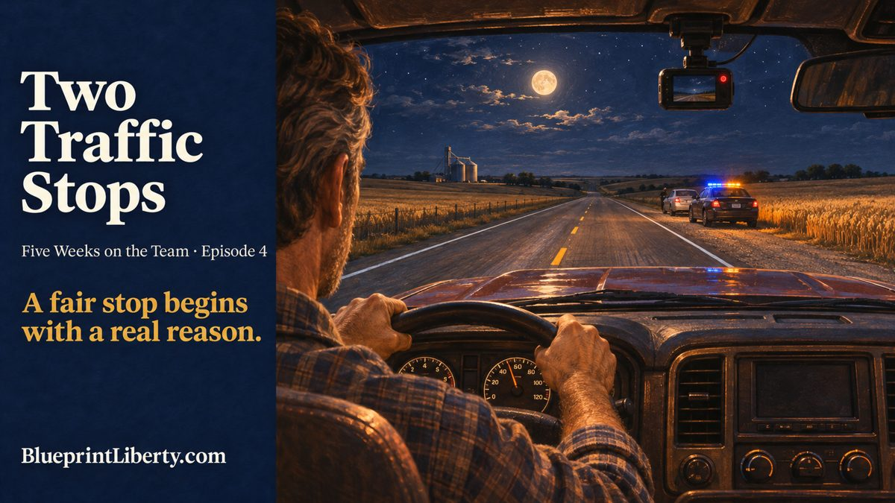

← Runtime Republic · Five Weeks on the Team
Five Weeks on the Team · Episode 4 of 10 · about 7 minutes · Draft under review

It was a Friday in early winter when two members of the team were pulled over on the same night. Both had stopped by the same retirement party for an old coworker. Neither knew about the other's stop until Sunday.
Dale had two beers over three hours, with a full plate of barbecue in between. He felt fine when he left, but when headlights pulled out of a side street behind him and stayed there for a mile, he started to worry. Then the lights came on. The officer told Dale he had been weaving. Dale did not think he had, but he was nervous, and he said so. He admitted the two beers. He took the field tests on a cold, sloped shoulder, and the officer arrested him. At the station, his breath test came back below the legal limit. He was booked anyway, and he called his wife from the jail phone in the morning.
Jake Lewis had worked late that night. He stopped by the party for half an hour after his shift to shake the retiring man's hand and eat a plate of food. Jake does not drink alcohol. He never has. At two in the morning he was driving home on an empty road, with no other car in sight, and he changed lanes without using his turn signal. That was the only thing he did wrong.
The lights came on behind him. Jake pulled over, rolled down his window and handed over his license, registration and insurance. The officer told him why he had been stopped: failure to signal a lane change. Jake said he understood. Then the questions started. Where are you headed? Where are you coming from? Jake answered honestly. Home. A retirement party. The officer asked if he had been drinking. Jake said no, he does not drink. The officer kept asking about the party, about who was there, about how long he had stayed. Then he asked Jake to step out and take a field sobriety test.
Jake had been awake for twenty hours, and he was certain he had done nothing but forget a turn signal. So he said what he believed. "I've given you my license, my registration and my insurance. You have all my information. I'm declining the field sobriety test, and I don't want to answer any more questions. The reason you stopped me is a missed turn signal, and that stop has a reasonable time limit. Please write the ticket so I can go home."
Jake believed that should have been the end of it. Instead, the officer's tone changed. He was angry, and he arrested Jake. At the station, Jake took the test they asked for, and it showed no alcohol at all. By the time he got home, the sun was up. He had lost his night's sleep and his Saturday shift, and he had a charge to answer for a night when he had not had a single drink.
On Sunday, both men told the team. Dale went first. He said he had two beers, that he had not felt impaired, and that he was scared anyway, because the officer said he had been weaving and he could not prove he had not. Jake went second, and he was angry. He had missed a turn signal on an empty road, declined a test he believed he did not have to take, and ended up in handcuffs.
Ruth saw the lesson first. "Two of you went to the same party," she wrote, "and two of you got stopped on the way home. Shouldn't the system be able to tell what really happened, fairly, fast, and in the open?"
That question became the team's first justice workshop, under the framework the app calls NBJF, the Node-Based Justice Framework. The app treats every part of the justice system as a node, the way it treats every tax: the reason for the stop, the questions, the request to step out, the field test, the arrest, the test at the station, the charge, the court, and the bills that follow each step. It drew both nights as the same value stream, with the same stations, and it asked the same questions at each one. What was the stated reason for this step? Was it recorded and visible to the person it happened to? How long did it take? What did it cost, and who paid?
The app took no side, and it did not act as anyone's lawyer. It acted as an ombudsman, and it helped each man read the law for himself. Here is what the team learned together. Police may watch people leave a bar or a party. Those are public places, and watching is not entrapment, because entrapment means an officer talks someone into a crime, not that he waits to see one. But a traffic stop is a seizure. An officer needs specific facts, such as a traffic violation, erratic driving or visible signs of impairment. Leaving a party is not enough by itself. The person could be a designated driver, an employee, someone who only ate, or someone who does not drink at all. And once a stop begins, it may not be stretched past its reason unless the officer has a reason to suspect something more.
That gave each man a question to chase. For Jake: when the officer asked him to step out, what did he have beyond knowing where Jake had been? For Dale: was there ever any weaving at all?
It was Maria who asked the question that changed Dale's week. "Don't you have a dash camera in your truck?" Dale did. He had bought it for insurance after a fender bender two years before and had forgotten it was even running. That night he pulled the memory card and watched the drive home with his wife beside him. The road, the lane lines, the headlights behind him. His truck stayed in its lane the whole way. There was no weaving. He watched it twice more to be sure, then sent the file to his lawyer.
The app added the footage to Dale's card in the workshop and marked the first station of his night in plain words: the stated reason for the stop does not match the recording. Combined with a breath test below the legal limit, Dale's question was no longer whether he had made a bad choice. It was why he had been stopped at all.
As the workshop always does, the app asked both men first. What would you fix? Jake wrote his idea in his own words. Every traffic stop should start a visible clock tied to its stated reason. If an officer wants to go past that reason, he says so out loud, states his reason, and the camera records it. A driver's refusal of a field test, by itself, can never be the reason for an arrest. Dale added his own: the officer's camera and the driver's camera should both be part of the record from the first minute, and when the stated reason for a stop does not match the video, the stop should be reviewed before any charge goes forward. Brittany added one more: when a stop goes past the law, the costs it caused should be paid back to the family that carried them. Two other team members offered ideas, and an AI offered one too. The team scored them all against the same rules. Jake's and Dale's ideas tied for best, because each fixed the exact station where his own night went wrong.
Pastor Dan asked whether private teams could walk both families through the weeks ahead. They said yes.
At the end of the five weeks, neither case was finished. Dale had his footage, his breath test and a court date. Jake had his clean test, a lawyer who had started asking questions of his own, and a court date too. Both stories went into the app as the first two cards in the police encounter workshop, each marked open, with every station of both nights on the record.
None of this turned the team against the police. Both men said they believe most officers want what they want: everyone home safe, within the law. The team's point was about the process, not the people in it. A fair stop begins with a real reason, stays within it, and leaves a record anyone can check. The team did not yet know how either case would end. But for the first time, they could see every step of both nights, and one of those steps was on Dale's own camera.
← Episode 3 · Series index · Episode 5 →